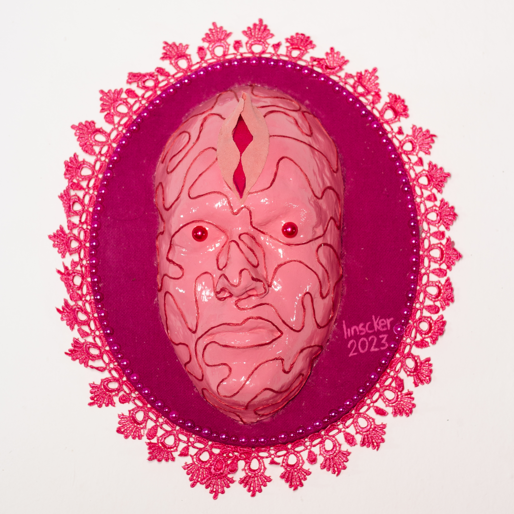

Durante a infância, buscava nos outros algo semelhante para validar minha existência, mas, infelizmente, os olhares que me retornavam destacavam sempre o quanto eu era percebida como diferente. Com o tempo, esses olhares passaram a rotular essas diferenças, resultando em contínuos processos de violência psicológica. Agora, compreendendo-me como travesti, percebo os olhares que se dirigem ao meu corpo ao transitar por diferentes espaços. Alguns desses olhares continuam a me violentar mas sei que em algum lugar, alguém me observa, podendo reconhecer e validar sua própria existência através da minha jornada.
Observar o outro e a si mesma, além de ser observada pelo outro, é como uma dança de espelhos em constante movimento. Quando olhamos para alguém, é como se estivéssemos diante de um espelho refletindo não apenas a pessoa à nossa frente, mas também partes de nós mesmas. Esse olhar de retorno nos mostra não apenas a imagem do outro, mas também nos revela aspectos de nossa própria essência e maneira de enxergar o mundo. É como se, ao observar alguém, recebêssemos de volta um reflexo que revela tanto sobre nós mesmas quanto sobre o outro. Da mesma forma, ser observada pelo outro cria um eco de reflexões mútuas, onde nossas ações, pensamentos e emoções são espelhadas e interpretadas por aqueles que nos observam, criando um ciclo interminável de troca de percepções e autoconhecimento.
O que você vê, quando retorna o olhar para si?